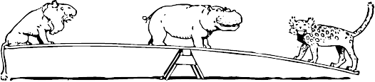

You are here: Home:Dive Into HTML5
№1.
"How Did We Get Here?"
DIVING IN
Recently, I stumbled across a quote from a Mozilla developer about the tension inherent in creating standards
Implementations and specifications have to do a delicate dance together. You don’t want implementations
o happen before the specification is finished, because people start depending on the details of
implementations and that constrains the specification. However, you also don’t want the specification to be
finished before there are implementations and author experience with those implementations, because you need the
feedback. There is unavoidable tension here, but we just have to muddle on through.
Keep this quote in the back of your mind, and let me explain how HTML5 came to be.

MIME TYPES
This book is about HTML5, not previous versions of HTML, and not any version of XHTML. But to understand the history of
HTML5 and the motivations behind it, you need to understand a few technical details first. Specifically, MIME types.
Every time your web browser requests a page, the web server sends “headers” before it sends the actual page markup. These
headers are normally invisible, although there are web development tools that will make them visible if you’re interested. But
the headers are important, because they tell your browser how to interpret the page markup that follows. The most important
eader is called Content-Type, and it looks like this:
Content-Type: text/html
“text/html” is called the “content type” or “MIME type” of the page. This header is the only thing that determines what a
particular resource truly is, and therefore how it should be rendered. Images have their own MIME types (image/jpeg for
JPEG images, image/png for PNG images, and so on). JavaScript files have their own MIME type. CSS stylesheets have their
own MIME type. Everything has its own MIME type. The web runs on MIME types.
Of course, reality is more complicated than that. The first generation of web servers (and I’m talking web servers from 1993)
didn’t send the Content-Type header because it didn’t exist yet. (It wasn’t invented until 1994.) For compatibility reasons
that date all the way back to 1993, some popular web browsers will ignore the Content-Type header under certain
circumstances. (This is called “content sniffing.”) But as a general rule of thumb, everything you’ve ever looked at on the web<
— HTML pages, images, scripts, videos, PDFs, anything with a URL — has been served to you with a specific MIME type in
the Content-Type header.
Tuck that under your hat. We’ll come back to it.
A LONG DIGRESSION INTO HOW STANDARDS
ARE MADE
Why do we have an  element? That’s not a question you hear every day. Obviously
someone must have created it.
These things don’t just appear out of nowhere. Every element, every attribute, every feature of HTML that
you’ve ever used — someone created them, decided how they should work, and wrote it all down. These people
are not gods, nor are they flawless. They’re just people. Smart people, to be sure. But just people.
element? That’s not a question you hear every day. Obviously
someone must have created it.
These things don’t just appear out of nowhere. Every element, every attribute, every feature of HTML that
you’ve ever used — someone created them, decided how they should work, and wrote it all down. These people
are not gods, nor are they flawless. They’re just people. Smart people, to be sure. But just people.
One of the great things about standards that are developed “out in the open”
is that you can go back in time and answer these kinds of questions. Discussions
occur on mailing lists, which are usually archived and publicly searchable.
So I decided to do a bit of “email archaeology” to try to answer the question, “Why do we have an
 element?” I had to go back to before there was an organization called the World Wide Web Consortium
(W3C). I went back to the earliest days of the web, when you could count the number of web servers with both
hands and maybe a couple of toes.
element?” I had to go back to before there was an organization called the World Wide Web Consortium
(W3C). I went back to the earliest days of the web, when you could count the number of web servers with both
hands and maybe a couple of toes.
POSTSCRIPT
In October 2009, the W3C shut down the XHTML 2 Working Group and
issued this statement to explain their decision
When W3C announced the HTML and XHTML 2 Working Groups in March 2007, we indicated that we would
continue to monitor the market for XHTML 2. W3C recognizes the importance of a clear signal to the community
about the future of HTML.
While we recognize the value of the XHTML 2 Working Group’s contributions over the years, after discussion with
the participants, W3C management has decided to allow the Working Group’s charter to expire at the end of 2009
and not to renew it.
The ones that win are the ones that ship.
FURTHER READING
|
DID YOU KNOW?
|
In association with Google Press, O’Reilly is distributing this book in a variety of formats, including paper,
ePub, Mobi, and DRM-free PDF. The paid edition is called “HTML5: Up & Running,” and it is available now.
This chapter is included in the paid edition.
If you liked this chapter and want to show your appreciation, you can buy “HTML5: Up & Running” with this
affiliate link or buy an electronic edition directly from O’Reilly. You’ll get a book, and I’ll get a buck.
I do not currently accept direct donations.
|